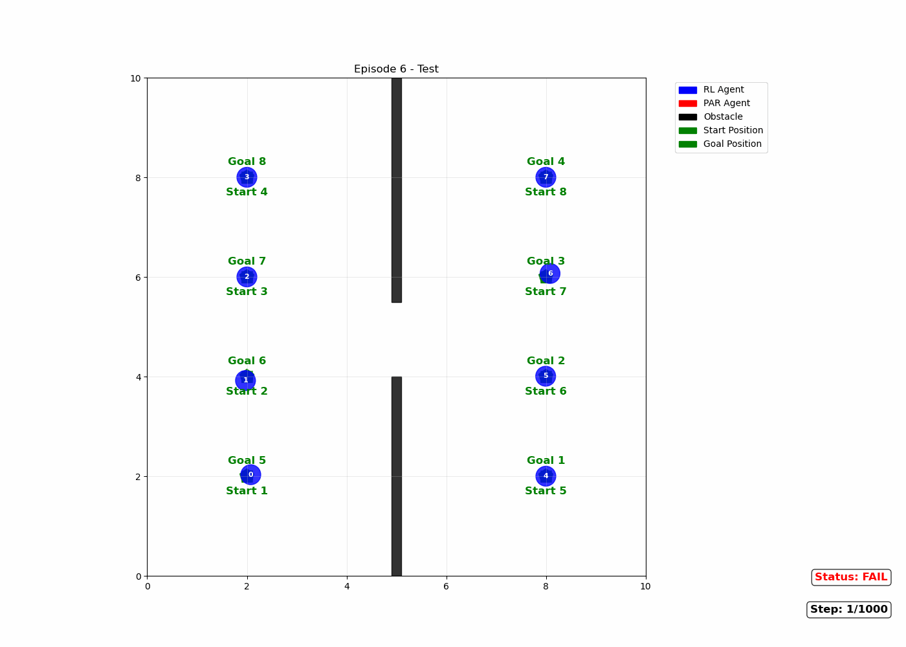
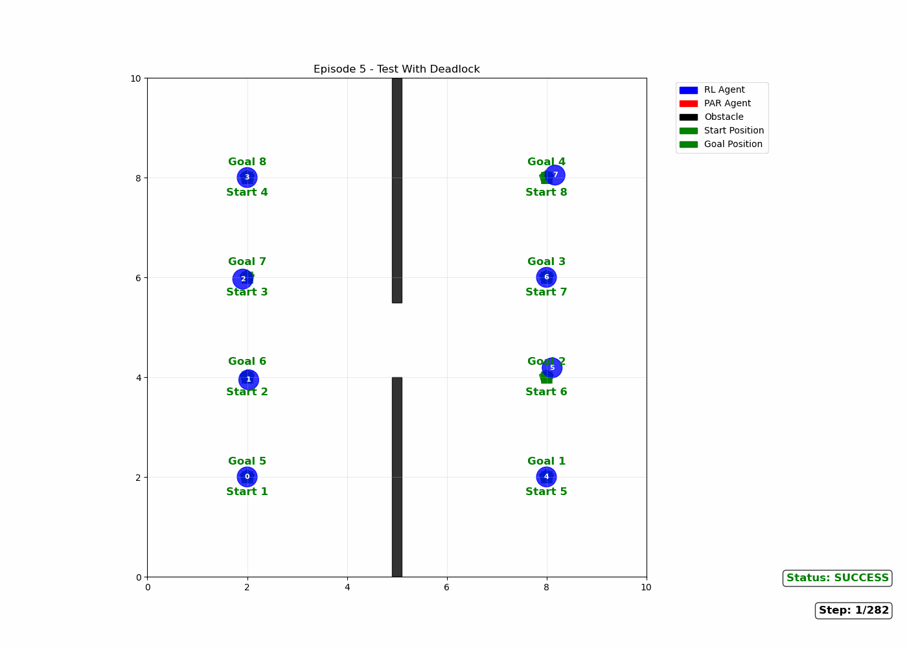
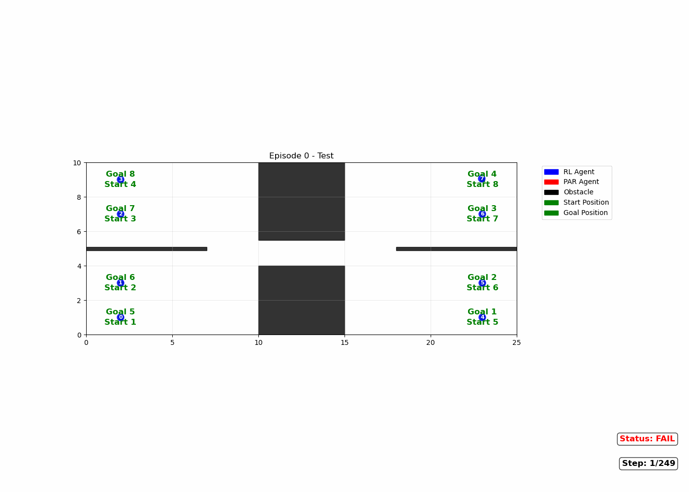
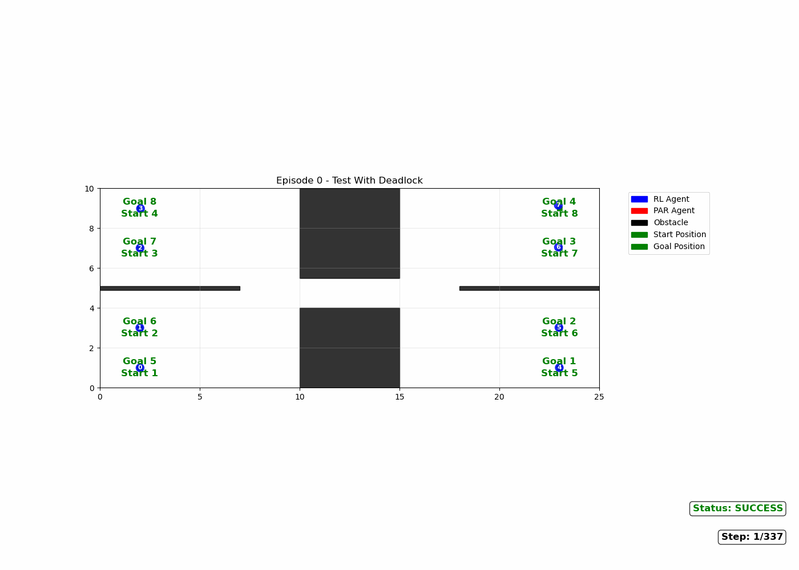

Abstract
Multi-robot navigation in cluttered environments must strike a balance between short-horizon collision avoidance and reliable long-range goal completion. In narrow passages and confined spaces, teams controlled by reactive policies (including RL-based ones) are prone to topological deadlocks: groups of agents engage in reciprocal avoidance but make no net progress toward their goals.
We propose a hybrid framework that couples a decentralized RL navigator with an on-demand Multi-Agent Path Finding (MAPF) module. A lightweight safety layer monitors local kinematics and waypoint progress to detect persistent standstills. When a deadlock is identified, we crop a small grid around the implicated agents, instantiate a locally confined MAPF instance, and invoke Push-and-Rotate to generate a short dense waypoint list for those agents only. The same RL policy then tracks these dense waypoints while handling local interactions; non-participating agents remain in the RL mode.
Across dense doorway and corridor benchmarks, this triggered hybrid reliably turns stalled interactions into successful completions, boosting team success rates from marginal to near-universal while keeping coordination overhead localized. The framework can be plugged into existing RL-based navigators with minimal changes and extends naturally to hierarchical task-planning pipelines for heterogeneous robot teams.
Method
Hybrid RL + MAPF Workflow
Our controller follows a layered design. By default, each agent runs a decentralized RL policy inspired by RVO-shaped state and reward design: the observation encodes VO/RVO geometry to nearby agents and obstacles, and a BiGRU-based encoder aggregates a variable-sized neighbor set into a compact state that is processed by PPO-trained actor–critic heads.
For long-range guidance, a grid-based planner (e.g., A*) generates sparse waypoint lists that serve as global references. The RL policy tracks these waypoints while performing reciprocal collision avoidance. This global-waypoints + local RL pattern works well in open regions but can stall when agents must be reordered topologically (e.g., door exchanges, two-way traffic in a single-lane corridor).
To handle such cases, we attach a deadlock detector and a locally confined MAPF module as a wrapper around the base RL navigator, without modifying the low-level policy itself.

Deadlock Detection
The deadlock detector monitors local motion statistics and reciprocal interactions. It combines three complementary triggers:
- Speed / non-progress trigger: flags mutual slow-down with negligible goal-directed motion among neighboring agents.
- Waypoint-stuck trigger: detects long-horizon stagnation when an agent’s active waypoint index has not advanced for a prolonged window.
- Core-pair risk trigger: uses short-horizon TTC / minimum-distance proxies to identify mutually “most-at-risk” pairs that seed the minimal coordination set.
A deadlock is declared when any trigger fires under appropriate gating. Starting from a seed agent, we form a small participant group by adding its most-at-risk counterpart and a tiny local closure of neighboring agents involved in the stall. Only this group will be escalated to MAPF; all other agents remain in the RL mode.
Locally Confined MAPF with Push-and-Rotate
Once a deadlock is detected, we crop a subgrid around the participant group, project their current poses and active global waypoints to grid cells, and form a discrete MAPF instance. This instance is solved using Push-and-Rotate (PnR), a complete, polynomial-time MAPF algorithm under mild blank-space assumptions. The joint discrete plan is then converted into short dense waypoint lists for each participating agent.
During the coordination phase, the same RL policy tracks these dense waypoints under a mild speed cap, providing robustness to model mismatch. Once the dense segments are executed and the stalemate is cleared, agents seamlessly switch back to the default RL navigation and resume following their original global waypoint lists.
Results
We evaluate the framework in two challenging static 2D scenarios designed to stress long-range progress under bottlenecks: a doorway environment with a short bottleneck and a corridor environment with a long single-lane passage. In both cases, agents start on opposite sides with symmetric start–goal pairs, creating dense bidirectional traffic.
Across a range of team sizes, the hybrid RL+MAPF controller dramatically improves success rates compared to the RL-only baseline. The GIFs below visualize typical runs in both scenes, contrasting a purely RL-based navigator (often stuck in deadlock) with the proposed hybrid controller.
Doorway Scenario


Corridor Scenario


BibTeX
If you find this work useful, please cite:
@article{wang2025deadlockfree,
title = {Deadlock-Free Hybrid RL-MAPF Framework for Zero-Shot Multi-Robot Navigation},
author = {Wang, Haoyi and Luo, Licheng and Kantaros, Yiannis and Sinopoli, Bruno and Cai, Mingyu},
journal = {arXiv preprint arXiv:2511.22685},
year = {2025},
doi = {10.48550/arXiv.2511.22685}
}